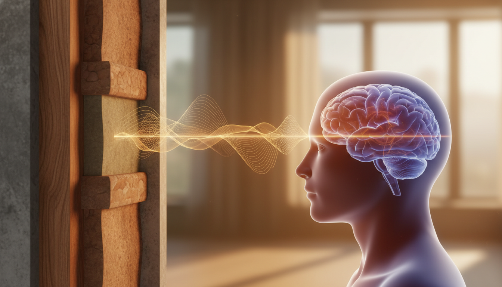

The 'Quiet' That Isn't: How Urban Noise Hijacks Your Rest
Imagine this: You've meticulously sealed your bedroom, drawn heavy curtains, and activated a white noise machine, creating what you believe is a fortress against the urban din. Yet, as you drift towards sleep, a faint, rhythmic thrum penetrates the quiet – the distant highway, the building's HVAC system. This isn't just background noise.
For nearly half of urban dwellers, this constitutes a constant, invisible assault on sleep, driving significant disorders (WHO, 2018).
Your auditory system, a primal sentinel, remains perpetually vigilant. Even in sleep, it scans for threats. Subtle shifts in ambient noise trigger physiological responses: heart rate quickens, brain waves shift. You do not consciously awaken, but your body registers the disturbance.
This constant, low-level vigilance prevents sleep from deepening into its most restorative stages. You spend hours in bed, but wake chronically fatigued, unrested. The quiet you sought isn't quiet; it's a battlefield your brain constantly fights.
Beyond the Decibel: The Stealthy Attack of Low-Frequency Noise
The most insidious enemy isn't the sudden siren; it's the constant, barely audible hum. This is low-frequency noise (LFN).
LFN manifests as the rumble of distant traffic, the thrum of industrial machinery, or an aging HVAC unit, typically operating between 20 and 200 Hertz. Unlike higher-pitched sounds that walls readily attenuate, these longer sound waves penetrate structural barriers like windows and concrete with ease, vibrating subtly into your sleep space.
Your conscious mind filters out LFN, but your nervous system registers every wave. This constant, subtle stress activates your hypothalamic-pituitary-adrenal (HPA) axis, the body's core stress response system, and keeps your sympathetic nervous system subtly aroused. Over time, this chronic nighttime exposure attenuates your natural cortisol awakening response – that crucial morning surge meant to energize you for the day. Why do you wake up feeling inexplicably drained?
Your body remains perpetually braced for a threat it cannot identify, never truly descending into restorative deep sleep.
Why You Wake Up Exhausted: Noise's Impact on Your Sleep Cycles
The insidious hum doesn't always jolt you awake. Often, it simply prevents your brain from truly letting go.
Even at 48 dB, sounds barely registered consciously trigger 'micro-awakenings' – momentary shifts pulling your brain from its deepest, most restorative phases (Basner et al., 2014). This isn't full wakefulness, but a fractured sleep architecture, diminishing crucial slow-wave (deep) sleep and memory-consolidating REM stages (Basner et al., 2014).
In urban environments, where noise frequently exceeds 65 dB, the correlation with poorer subjective sleep quality and even neurological symptoms is consistent (WHO, 2018). Your body, instead of engaging in vital cellular repair and emotional processing, remains trapped in lighter, less effective sleep. The consequence is not merely fatigue, but a profound, inexplicable exhaustion, because your brain never fully completes its essential nightly work.

This internal alarm system, designed for acute threats, becomes a chronic background hum. You wake feeling 'wired but tired,' your body and mind locked in a cycle of incomplete rest. Cells cannot fully repair, memories cannot consolidate, emotions cannot process. The long-term impact of this unseen stress extends beyond fatigue; it's a slow erosion of your resilience and well-being. Reclaiming the quiet your sleep needs demands conscious effort.
Building Your Sleep Sanctuary: A 5-Step Noise Reduction Protocol
Reclaiming that quiet demands active intervention, especially in urban environments where low-frequency hums and sudden disruptions are constants. You cannot eliminate every sound, but you can build a formidable defense against the ones that steal your deep sleep.
Start with the simplest barrier: deeply inserted earplugs. They reduce ambient noise by 20-30 dB, effectively muting the mid-to-high frequencies that often jolt you awake.
For more targeted blocking of consistent low-frequency drone, invest in Active Noise Cancelling (ANC) headphones or earbuds. These actively cancel out specific sound waves, creating pockets of true silence even in noisy environments.
Beyond blocking, consider sound masking. Brown or pink noise generators do not eliminate sound; they create a consistent, natural-sounding background that makes sudden disturbances less noticeable, helping your brain stay in deep sleep phases (PubMed, 2003).
Address structural weaknesses. Heavy, insulated curtains or even temporary acoustic panels on windows and shared walls significantly increase mass, blocking the low-frequency noise that penetrates standard construction (PubMed, 2004).
Finally, reposition your sleep space. Moving your bed even a few feet away from an external wall dramatically reduces direct sound transmission from street noise or neighboring units (NIH PMC, 2012).
Your Noise Reduction Protocol
- Insert high-fidelity earplugs nightly. Ensure a deep, comfortable seal to maximize passive noise reduction.
- Employ ANC headphones or earbuds. Use them for targeted blocking of persistent low-frequency sounds like traffic or HVAC hum.
- Run a pink or brown noise generator. Maintain a consistent, low-level soundscape to mask sudden disruptions.
- Increase wall and window mass. Hang heavy, insulated curtains or install acoustic panels on exterior or shared walls.
- Relocate your bed. Move your sleeping position away from external walls to reduce direct sound transmission.
Sources
- Basner M, et al. Sleep. 2014: Effects of nocturnal aircraft noise on sleep, performance, and mood.
- WHO, 2018: Environmental Noise Guidelines for the European Region.
- PubMed 2003: The effects of pink noise on sleep electroencephalogram and sleep structure.
- PubMed 2004: Environmental noise and sleep quality.
- NIH (PMC) 2012: The impact of environmental noise on sleep.
This is not medical advice. Talk to your provider.
Understanding these invisible forces is the first step toward reclaiming the truly restorative quiet your body needs.